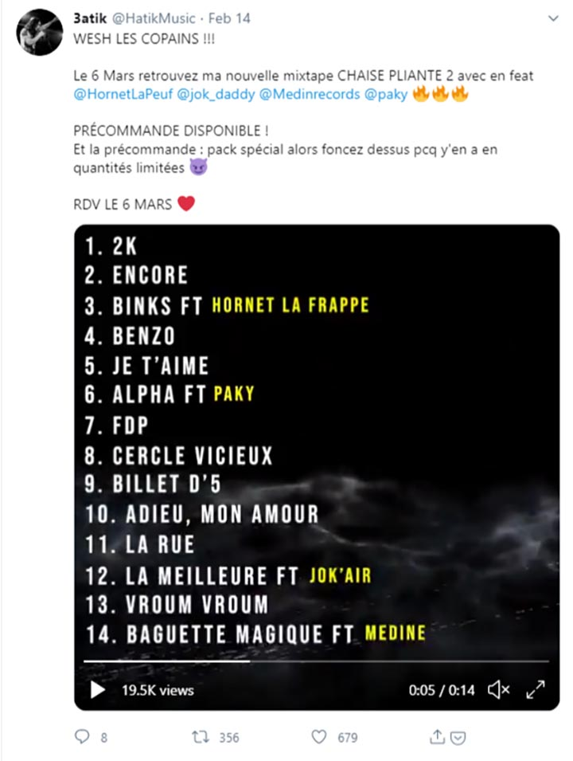

Chaise pliante II : Du monde sur la mixtape
Après sa première mixtape “chaise pliante”, Hatik nous dévoile le tracklisting de la chaise pliante II
Quelques mois après la sortie de la très bonne mixtape Chaise Pliante, Hatik s'apprête à récidiver avec la partie 2 de ce projet. Sur ses réseaux sociaux, après avoir dévoilé la cover et la date de sortie , le rappeur a balancé la tracklist. Il a gâté ses fans avec 16 morceaux et 4 invités Hornet La Frappe, Jok'Air, Médine et Paky.
Hatik n’arrête pas de nous impressionner, à se demander ce qu’il nous réserve pour la suite.
"Validé" :le clip FLK de Hatik et Sam’s qui déchire
Le clip du morceau phare de la série dévoilé nous faire revivre les instants dans Validé.
Hatik fait grimper sa notoriété depuis la sortie de la série VALIDÉ
Après sa prestation dans la série Validé où Hatik joue le rôle principale Apach, il accumule des followers sur ses réseaux sociaux et voit ses streams en hausse.
Hatik revient avec l’édition Deluxe de ses mixtapes chaise pliante
L’un des grand rappeur du moment, nous dévoile la chaise pliante version Deluxe de la chaise avec d’autres nouveaux morceaux
Hatik: Album “chaise pliante” certifié disque d’or
Hatik, acteur principale de la série “Validé” célèbre son premier disque d’or de sa carrière.